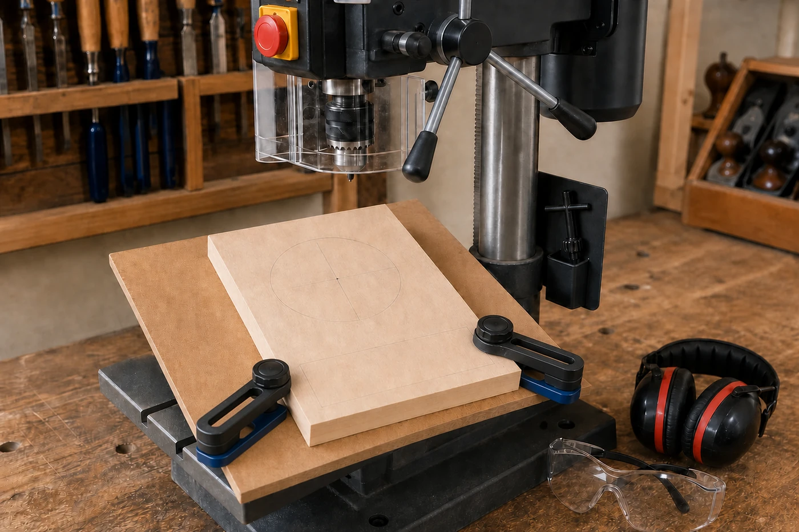

Your work
Student details
Your entries save automatically in this browser. Use Download evidence PDF before leaving the page.
Weeks 5-6
This module
Plan the face opening, verify the actual school drill press procedure and protect accuracy through controlled housekeeping.
Theory 1
Planning and drilling the Clock face opening

The Clock face opening must be positioned accurately because it affects both the appearance and function of the finished project. If the opening is off-centre, too close to an edge or incorrectly located, the clock mechanism may not fit as intended and the front face may look uneven. Before any drilling begins, use the working drawing and teacher directions to identify the correct location. Do not estimate the position by eye, and do not invent a diameter that is not stated in the verified project information.
The centre point should be marked clearly and checked against the relevant dimensions and views. Confirm that measurements have been taken from the correct reference edges. Cross-checking from more than one direction can help identify a marking error before material is removed. Once drilled, the opening cannot simply be moved, so careful checking at this stage saves timber, time and unnecessary repair work.
The legacy Clock course identifies a drill press and a Forstner bit for producing the opening. However, the actual bit selection, machine speed, guards, clamping arrangement and drilling sequence must follow the school’s approved standard operating procedure (SOP) and the teacher’s direction. Students must not set up or operate the drill press independently unless specifically authorised and supervised under school procedures.
Securing the work is essential. A rotating drill bit can catch timber that is loose or poorly supported, causing the component to move suddenly. Holding the work by hand is not an acceptable substitute for an approved clamping and support arrangement. The teacher must confirm that the component is correctly positioned, firmly secured and properly supported before drilling begins.
A controlled drilling plan should include:
- confirming the marked centre against the working drawing;
- checking that the selected bit and setup match the approved SOP;
- inspecting the timber for defects near the drilling area;
- securing and supporting the component as directed;
- checking guards, clearance and machine condition with the teacher;
- following the demonstrated drilling sequence without rushing; and
- stopping immediately if the timber moves, the machine sounds unusual or the setup appears unsafe.
After drilling, inspect the opening before moving to the next stage. Check its location, shape and edge quality, and look for breakout, burning, rough fibres or damage around the face. Compare the result with the project requirements and report any concern rather than attempting an unapproved correction.
Theory 2
Building an accurate drill press Safe Operating Procedure
A Safe Operating Procedure, or SOP, is a written guide that explains how a machine is prepared, used and left safely. It does more than list hazards. A useful SOP places information in a clear order so the operator can identify the machine, check the work area, confirm the required controls and respond correctly if something goes wrong. For the Clock project, the SOP must relate directly to the drill press used to produce the face opening.
The assessment requires a written SOP for the drill press or the machine used most. Your document must be based on the actual school SOP, the teacher demonstration and any approved manufacturer information supplied in class. The legacy Clock course identifies a Forstner bit for the face opening, but this does not allow you to guess the correct bit, speed, guard arrangement, clamping method or operating sequence. These details depend on the school equipment, the approved procedure and teacher direction.
An accurate drill press SOP should organise information into the following sections:
- Purpose and identification: name the machine, state the task it supports and identify who is authorised to supervise or approve its use.
- Hazards and required controls: record relevant hazards and the controls stated in the school SOP, including required PPE, guarding, secure work and access restrictions.
- Pre-start checks: include the approved checks for the machine, work area, selected equipment, workpiece position and setup. Do not invent these checks.
- Operating procedure: describe the teacher-approved sequence in the correct order, including how the Clock component is positioned and secured before any supervised operation begins.
- Shutdown and housekeeping: record the school requirements for stopping the machine, waiting for movement to cease, clearing the area and reporting faults.
- Emergency response: state how to stop work, alert the teacher and follow the school emergency procedure. Local emergency controls must be copied accurately from the approved source.
Before submitting your SOP, compare every step with the school version. Check that the wording is specific, the order is logical and no important control has been replaced by a vague phrase such as “be careful”. A strong SOP also separates normal operation from emergency action and makes clear that students use the drill press only under the required supervision.
Theory 3
Workshop housekeeping and care of Clock tools

Good workshop housekeeping is part of making an accurate and safe timber Clock. A crowded bench, loose off-cuts, dust and tools left in the wrong place can interfere with measuring, marking and checking components. They can also create hazards for you and other students. Keeping the work area orderly is not an extra task completed after the project work. It is a normal part of each practical lesson.
Only the items needed for the current stage should be kept at the bench. Clock components, approved off-cuts, drawings and tools should be arranged so they are protected and easy to identify. Components must not be placed where they may fall, become mixed with another student’s work or be damaged by other activities. Storage arrangements vary between workshops, so follow teacher directions and the relevant school procedures.
Measuring and marking tools affect the accuracy of the Clock carcass, face opening, joints and hidden drawer. They should be handled carefully, kept clean and returned without damage. A damaged reference edge, loose part or unclear marking point may lead to inaccurate work. Do not attempt repairs, adjustments or maintenance unless directed and supervised by the teacher. Report any damage or unusual condition promptly rather than returning the tool without saying anything.
Edge tools require particular care because their cutting edges can be damaged by careless contact or unsafe storage. Carry, place and return them according to the teacher’s instructions and school procedures. Do not leave an edge tool hidden under timber, paper or other materials. Sharpening and other maintenance tasks must only occur under teacher direction using approved procedures.
Before leaving the workshop, complete an end-of-lesson check:
- Stop work when instructed and make the Clock components safe.
- Check that parts, drawings and approved off-cuts are identified and stored as directed.
- Return measuring, marking and edge tools to their correct teacher-approved storage system.
- Report damaged, missing or unsafe equipment immediately.
- Remove waste, dust and loose material using the approved workshop procedure.
- Check the bench, floor and shared area so they are ready for the next student.
Responsible housekeeping also supports collaborative participation. Other students should not have to search for tools, clear your waste or discover damaged equipment. Leaving the workspace ready for the next class shows respect, protects resources and helps everyone begin safely and efficiently.
Guided practice
Weeks 5-6 knowledge checks
Choose an answer, check it and use the progressive hints and feedback to improve.
Apply your learning
Scaffolded written responses
Write first, use the feedback prompts, then compare your reasoning with the model response.
Finish the two-week block
Save your evidence
Your work saves in this browser, but browser storage is not the official submission. Download the module evidence PDF before changing devices or clearing browser data.
No marks, answers or personal information are sent from this webpage.